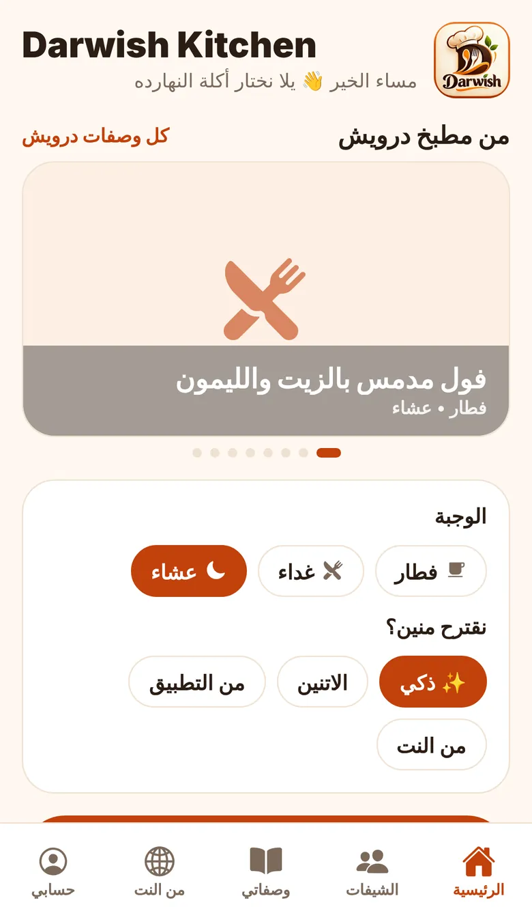
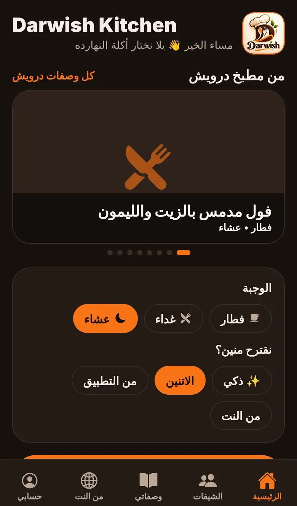
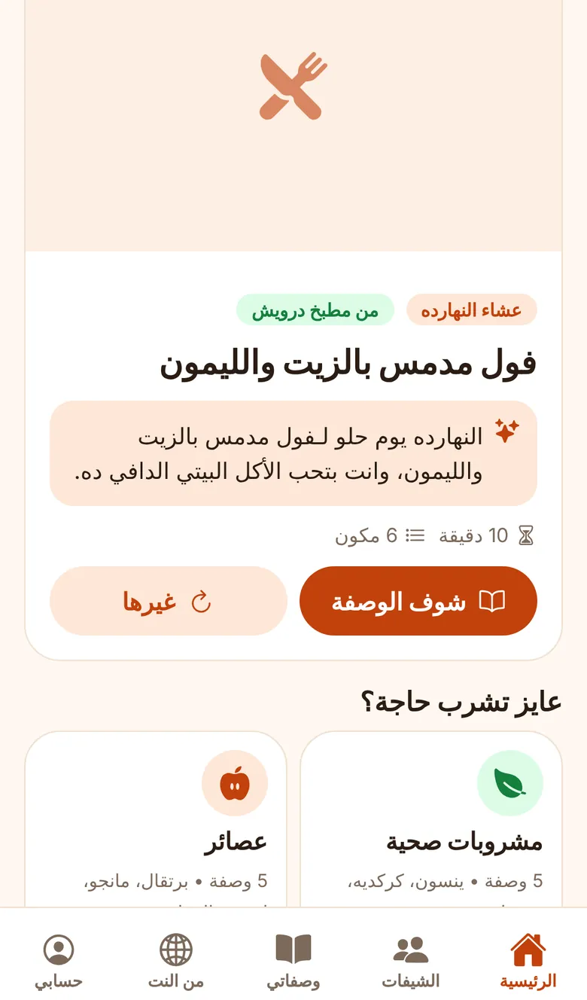
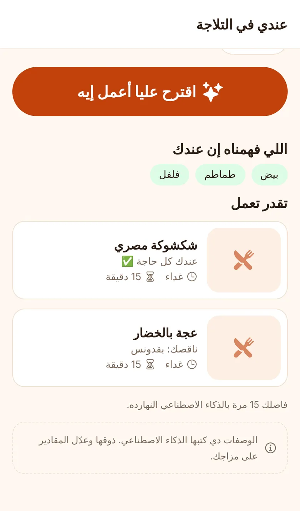
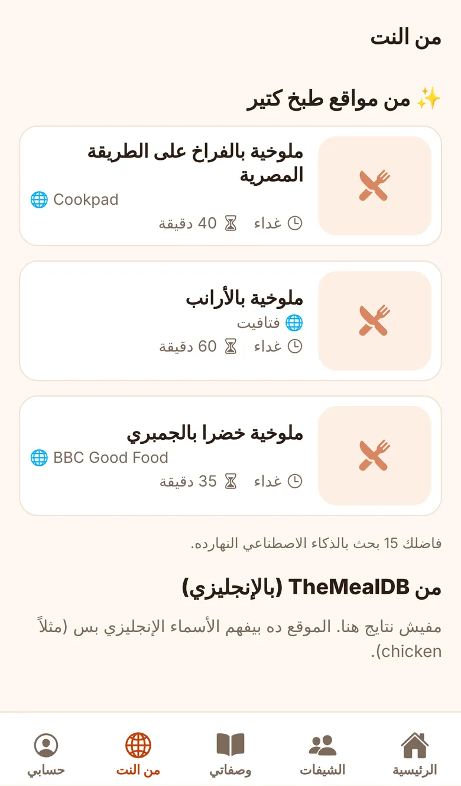
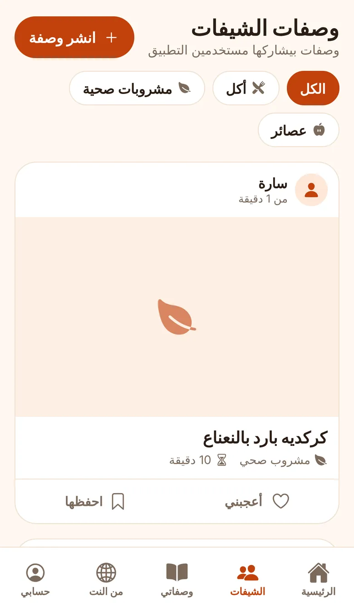
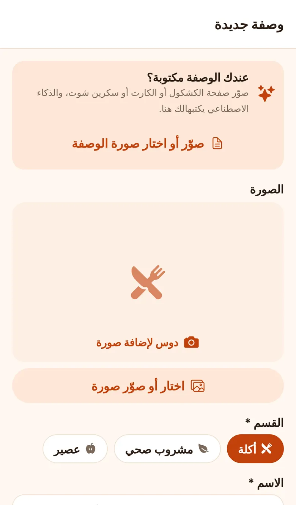
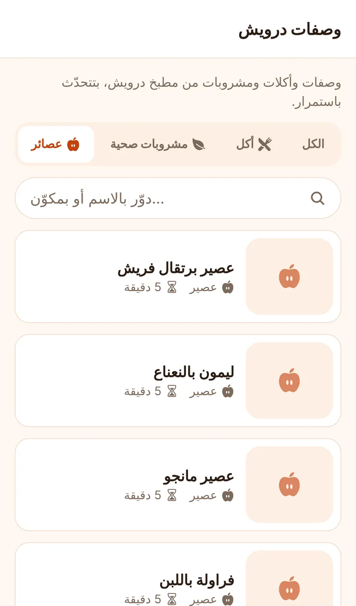

صوّر وصفة مكتوبة
وصفة ماما في الكشكول؟ صوّر الصفحة، والتطبيق يكتبها في الخانات وانت تراجعها وتحفظها.
مطبخ درويش · تطبيق وصفات بالعربي
النهارده: ملوخية بالفراخ
سؤال كل يوم في كل بيت. Darwish Kitchen بيجاوبه: بيختارلك أكلة على ذوقك وعلى حسب الوقت، ويقولك تعمل إيه باللي في تلاجتك، ويجيبلك الوصفات بالعربي من مواقع طبخ كتير.


أول ما تفتح، التطبيق بيعرف الوجبة من الساعة، وانت تقدر تغيّرها بلمسة.
دوس على "حناكل إيه النهارده؟" والاقتراح الذكي بيبص على الأكلات اللي عجبتك وقيّمتها، واللي شفتها الأيام اللي فاتت علشان ميكررهاش، وعلى اليوم والوقت، ويختارلك أكلة واحدة ومعاها السبب.
"النهارده الجمعة وانت بتحب المحشي، والجو برد يناسبه أكل بيتي دافي."مثال لسبب الاقتراح

اكتب الحاجات اللي عندك أو صوّر التلاجة، وبعد لحظات يجيلك 3 أو 4 أكلات تقدر تعملها دلوقتي، بالمقادير والطريقة.

اكتب اسم أي أكلة أو مشروب، والذكاء الاصطناعي يدوّر في مواقع الطبخ العربي والأجنبي، ويكتبلك الوصفات بالعربي البسيط، ومع كل وصفة اسم الموقع ورابطها الأصلي.

وصفة ماما في الكشكول؟ صوّر الصفحة، والتطبيق يكتبها في الخانات وانت تراجعها وتحفظها.
انشر وصفاتك باسمك وصورتك، وشوف وصفات باقي الناس، واعمل إعجاب واحفظ اللي يعجبك.
أكلات مصرية جاهزة، ومشروبات صحية زي الينسون والكركديه، وعصائر زي المانجا والفراولة باللبن.
كل وصفة بصورتها ومكوناتها وطريقتها، مقسّمة أكل ومشروبات صحية وعصائر، مع بحث.
سجّل برقم موبايلك بكود على واتساب، وارفع وصفاتك وصورها، وارجّعها على أي موبايل تاني.
من اليمين للشمال بالمصري، ووضع ليلي بيمشي مع إعدادات موبايلك.



مش محتاج متجر. افتح الموقع من الموبايل وثبّته، فيظهرلك أيقونة على الشاشة ويفتح زي أي تطبيق، وكل تحديث بيوصلك لوحده.
بيشتغل كمان على الكمبيوتر من أي متصفح.
لأ، مجاني. مميزات الذكاء الاصطناعي ليها عدد مرات في اليوم لكل حساب.
وصفاتك وملفك وتقييماتك محفوظين على موبايلك نفسه. السيرفر بيتستخدم بس لو عملت نسخة احتياطية، أو نشرت وصفة للشيفات.
لأ، تقدر تستخدم التطبيق من غير حساب. الحساب برقم الموبايل (كود على واتساب) محتاجه للنسخة الاحتياطية، والنشر للشيفات، ومميزات الذكاء الاصطناعي.
وصفات النت بيجيبها من مواقع طبخ معروفة ومعاها رابط المصدر. الأفكار اللي بيكتبها لوحده (زي التلاجة) بنكتب عليها إنها من الذكاء الاصطناعي، فذوقها وعدّل المقادير على مزاجك.